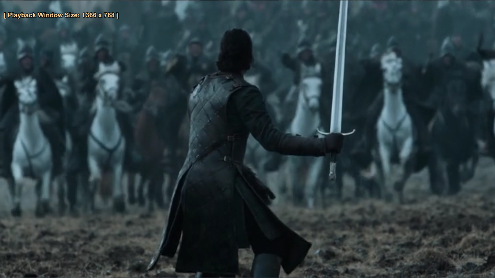
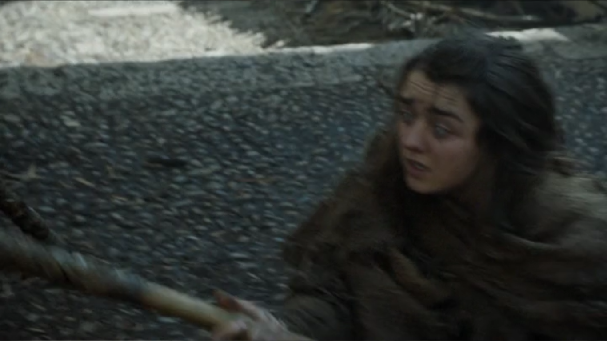

Jon Snow is dead! But only until Melisandre, calling on the Lord of Light, brings him back (to the surprise of all, Melisandre included). Thus begins the war of the Bastards, with Jon intent on wresting Winterfell back from Ramsay and Roose Bolton. Actually make that just Ramsay – who eliminates his dad, his stepmother, and newborn half-brother (a true blood heir who jeopardises Ramsay's position).
As a final conflict between the two approaches, Sansa and Theon continue to flee Ramsay's forces. Sansa travels to the Wall where she is reunited with her brother ("half brother," Lord Baelish might say, with a significant pause between "half" and "brother"). Theon, meanwhile, journeys to the Iron Islands, just in time for his hateful father to be deposed by Theon's even more unpleasant uncle Euron.
jon snow
In King's Landing ,a post-Shame Walk Cersei isn't quite off the hook. She's been humiliated - but must nonetheless stand trial for her crimes. The fundamentalist High Sparrow is not for turning and guileless King Tommen has agreed a formal alliance between church and state.
Bearing further bad news is Jamie, who reveals that Myrcella is dead. Now all but one of Cersei's children is gone, bringing closer a witch's prediction that her offspring would wear funeral shrouds (good luck surviving the prophecy Tommen).
Daenerys is having a testing time, too, as prisoner of the Dothraki. As the surviving wife of a slain Khal it is her fate to live in cloistered servitude with the other widows. This doesn't chime with her plans to rule the entire known world. So she scorches her opponents alive and, walking unharmed through the flames, and becomes leader of the Dothraki (her pledge to burn first, ask question later finding favour with the barbarian masses).
yara
She returns with Drogon to Meereen, where wise and wily Tyrion has brought an uneasy peace. Meanwhile Theon and Yara Greyjoy (Gemma Whelan) have stolen the Iron Islands, battlefleet from beneath the exceedingly wicked nose of usurper Euron Greyjoy. Fleeing to Essos. There, they strike an alliance with Daenerys. Boats, dragons, Dothraki – look out Westeros, the Targaryens are coming!

In the North, the Battle of the Bastards is joined as Ramsay clashes with Jon (but not before Ramsay shoots dead the youngest Stark sibling, Rickon, strictly for the chuckles).
There follows lots of top level hacking, slashing and rucking in the muck. Just as the tide appears to have turned in favour of Ramsay, however, in rushes Petyr Baelish and the Knights of the Vale who carry the day. Hurrah! Or, as Ramsay might put it, "aargh!" as he is fed to his own dogs by a very vengeful Sansa (it's sadistic and disgusting but still... yay for Sansa).
hodor
In Essos, Arya regains her sight and recommences her training at the House of Black and White. However, the going remains bumpy as she clashes with her nemesis the Waif after refusing to assassinate a kindly actress. Upon overcoming her implacable foe, Arya is shown the door by Jaqen – who intimates her training may be complete and that she is indeed “no one”. We next see her, in shape-shifting form, cutting the throat of Red Wedding planner Walder Frey.
In a mystical cave, Bran studies with the "Three-Eyed Raven" – in reality a wizened human psychically connected to a tree (Max Von Sydow), and experiences time-traveling visions. We discover how Hodor became Hodor – a complicated temporal loop – and learn the truth of Jon Snow's true parentage. He is the child of Ned's tragic sister Lyanna. The identity of his father is not revealed. However GoT fans are confident it is Daenerys's slain brother Rhaegar Targaryen, who fell in love with Lyanna and absconded with her.
Unfortunately, Bran's training is interrupted by the Night King who kills the Three-Eyed Raven and sends the Stark boy and companion Meera fleeing. Hodor - who indeed "holds the door" against the zombies – sacrifices himself so that they may escape.
An unpleasant fate similarly beckons for Cersei. She has sent Jamie off to the Riverlands to put manners on old Stark ally “Blackfish” Tully. Alone except for the resurrected Mountain and her loyal mad scientist Qyburn, what's an incestuous Queen Mother to do?
The answer, Cersei concludes, is to blow up the Great Sept with some of that leftover wildfire, thus eliminating every rival power player - including Margaery, the High Sparrow and her uncle Kevan (appalled, Tommen jumps from a window). With the Iron Crown upon her head, does the Game of Thrones at last have a winner?